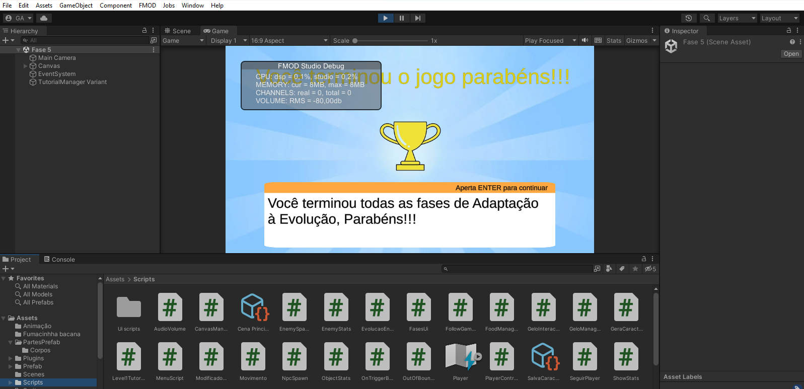
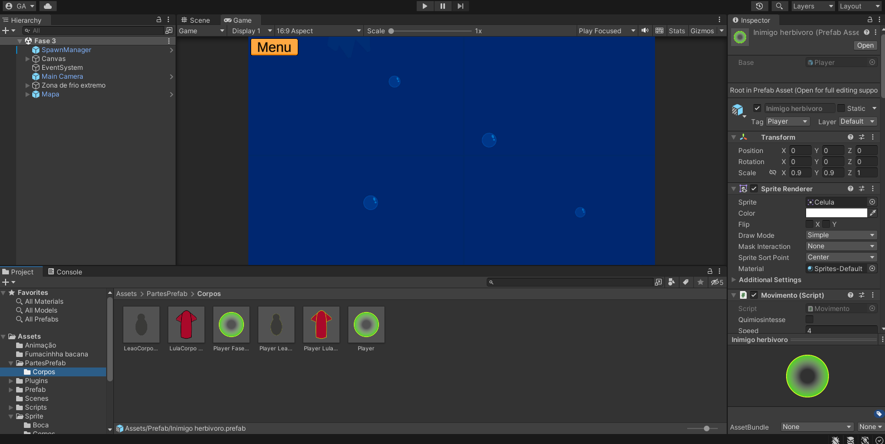
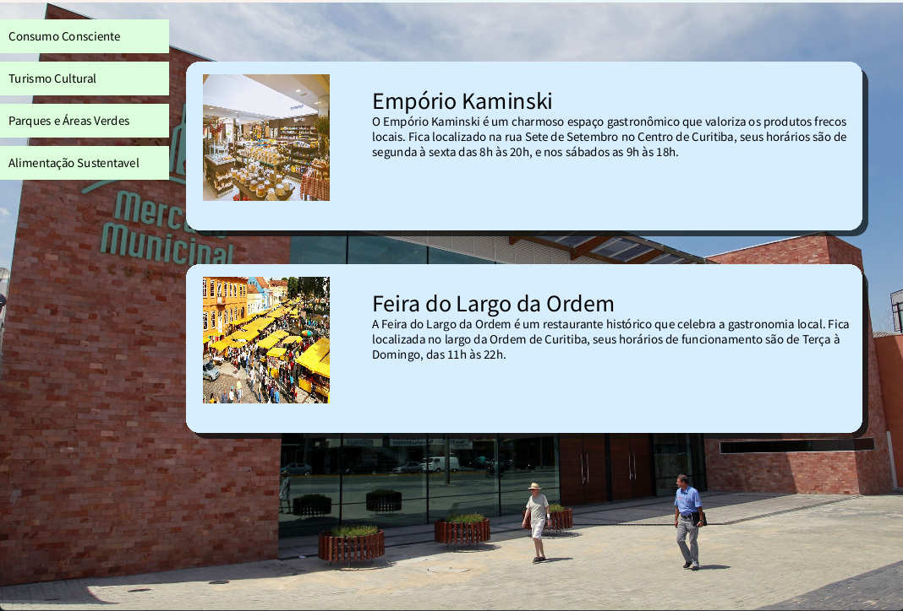
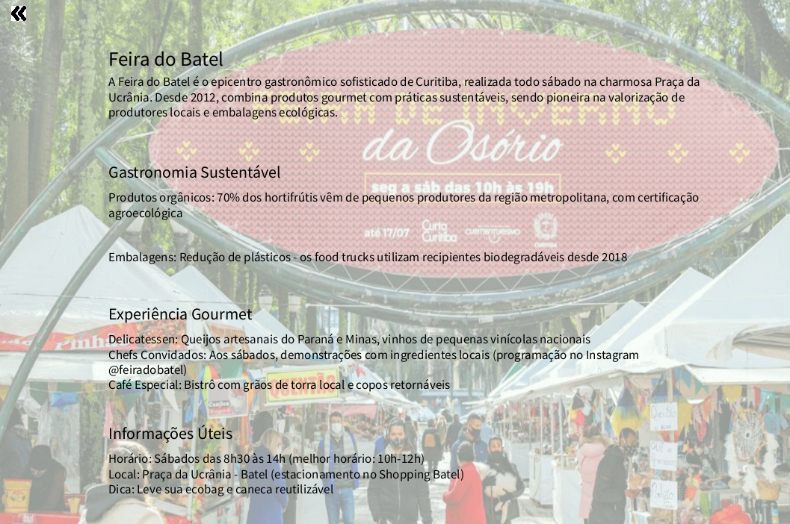
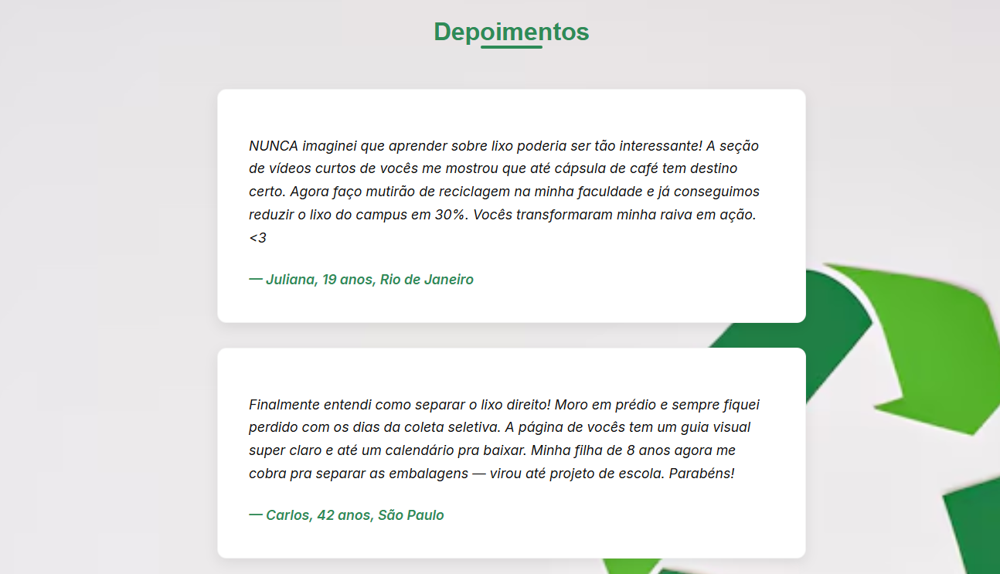

Clique para ver os detalhes
Adaptação à Evolução foi um jogo 2D desenvolvido para meu TCC no curso de jogos digitais. O jogo tem o propósito de explorar, de forma interativa e educativa, os conceitos da teoria da evolução biológica de Charles Darwin. O projeto combina mecânicas de gameplay baseadas em seleção natural, adaptação genética e estratégias alimentares, contextualizadas em diferentes períodos históricos da Terra.
A narrativa do jogo é estruturada em fases que representam eras geológicas reais, incluindo eventos como grandes extinções em massa, proporcionando um cenário dinâmico onde as criaturas precisam se adaptar para sobreviver. O jogador é responsável por escolher os descendentes mais aptos, influenciando diretamente o processo evolutivo da espécie, o que gera uma experiência estratégica e científica ao mesmo tempo.
Desenvolvido na linguagem C# com o motor Unity, o projeto destaca-se pela integração de princípios biológicos com design de jogos, promovendo o aprendizado sobre evolução e ecologia através da interação lúdica. O jogo também enfatiza a variabilidade genética como fator essencial para a adaptação, oferecendo um sistema que simula mutações e seleção natural dentro do ambiente virtual.
Este trabalho reflete a aplicação prática de conhecimentos teóricos em um produto digital, demonstrando habilidades em programação, design de jogos, e comunicação científica.
Link do projeto: https://github.com/gustavoandrade18/Adapta-o-Evolu-o-TCC
Link do jogo: https://drive.google.com/drive/folders/1m1G-etFpBcAoslPq1VJsH6P4PefrT70r?usp=drive_link
 Clique para ver os detalhes
EcoTrip Curitiba é um projeto visual interativo criado como parte de uma atividade acadêmica voltada à programação criativa. Desenvolvido na plataforma Processing, o projeto propõe uma experiência de guia turístico com foco ecológico, demonstrando como é possível explorar a cidade de Curitiba de forma consciente e respeitosa ao meio ambiente.
Através de gráficos gerados por código e interações simples com o usuário, o projeto apresenta pontos turísticos sustentáveis, incentivando práticas de turismo responsável. EcoTrip Curitiba une criatividade, código e educação ambiental em uma proposta acessível e visualmente envolvente.
Integrantes que participaram desse projeto: Gustavo Andrade, Alan Dlugosz, Geovana Estrela, Matheus, Rafael Engel
Link do projeto: https://github.com/gustavoandrade18/Projeto2
 
Clique para ver os detalhes
Do Lixo ao LUXO é um projeto web colaborativo criado com o objetivo de informar e conscientizar o público sobre práticas sustentáveis, com foco na reciclagem de resíduos e na redução da poluição ambiental. O site apresenta conteúdos educativos, dicas práticas e orientações acessíveis para adotar um estilo de vida mais ecológico.
A ideia surgiu a partir da observação de um rio poluído na vizinhança de um dos integrantes, despertando o desejo de impactar positivamente a comunidade por meio da tecnologia. Cada membro da equipe foi responsável por uma parte do site, incluindo estrutura, conteúdo e estilo visual, promovendo um trabalho em equipe bem distribuído e colaborativo.
O projeto foi desenvolvido em HTML, CSS e JavaScript, com atenção à estética, navegação e clareza das informações, e demonstra a capacidade da equipe de aplicar conhecimentos técnicos em um contexto social relevante.
Integrantes que participaram desse projeto: Alan Dlugosz, Geovana Estrela, Matheus, Gustavo Andrade, Rafael Engel, Pedro
Link do projeto: https://github.com/RafaelEngels/Projeto-3-Puc
